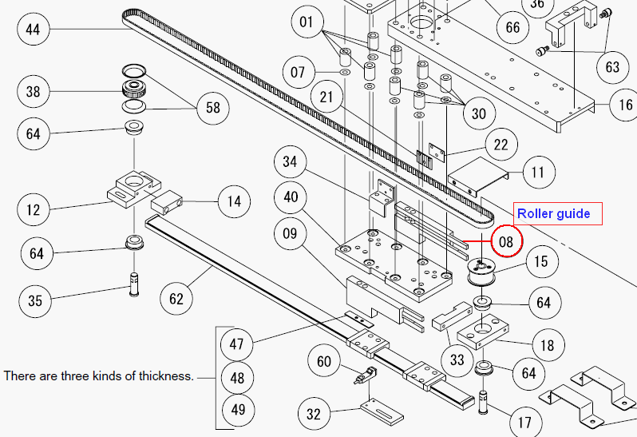

Service History
Subject: NS-6040 Shuttle 1 homing position suddenly out.
Handler Model: NS-6040 (S/N:18288)
Controller: SRC520
Date: 6 Apr 2010
Symptom
During alignment check, shuttle 1 homing position suddenly out of position.
Action
Calibrating and teaching of shuttle 1 carried out but problem still persisted.
Found out the shuttle 1 roller guides fill with a thick layer of dirt.
After cleaning, the problem solved. Jam rate (0 in 3000) carried out without any jam.

Cause
Dirty roller guides of Shuttle 1 caused homing position and shuttle position out.